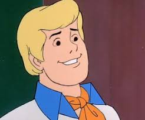
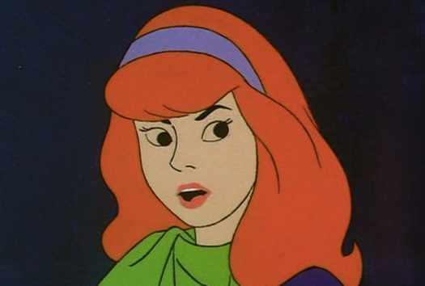
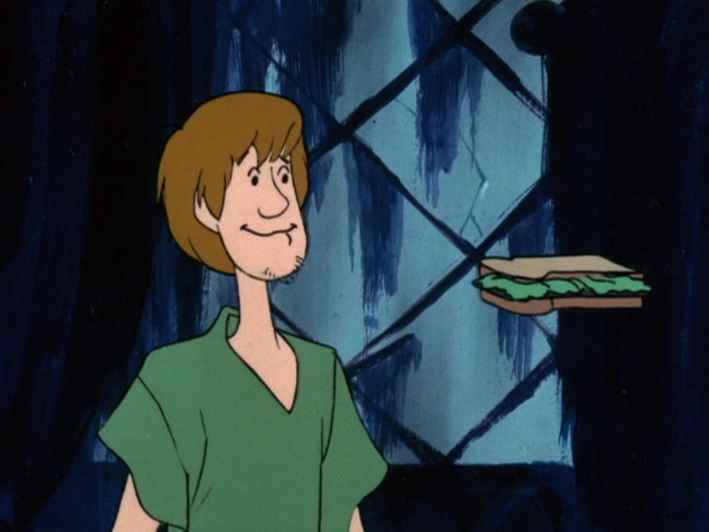
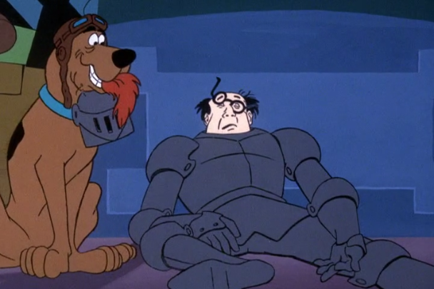
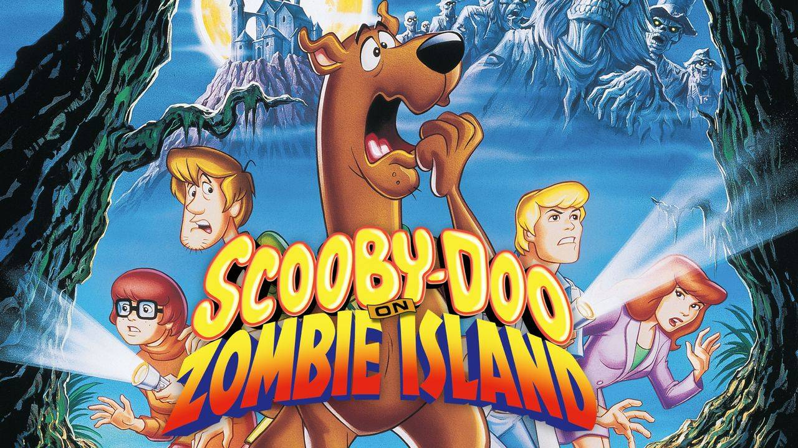
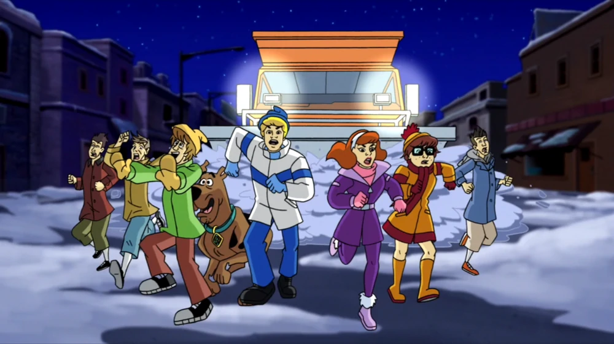

About Scoob!
Scooby-Doo is the mystery solving mutt that we all know and love. He's cracked cases ranging from silly to spooky and everything in between! From his signature snacks to the courageous crew with him, his hijinks have captivated audiences for years and hopefully will continue to do so for years to come.
The Gang's All Here!
Fred
Daphne
Velma

Shaggy
Cracking The Case: A Selection of Hijinks!
"What a Night for a Knight"
This is where it all started. A run through the museum being chased by the Black Knight leads the gang to uncovering a smuggling and forgery ring!
"Scooby-Doo on Zombie Island"
Zombie Island is one of the cornerstones of the Scooby-Doo universe. It was the first exposure to actual real monsters for the gang, and led to some of the most memorable moments from any of the Scooby-Doo movies! Released in 1998, it was also a well-advertised film, including taglines and commercials.
"Simple Plan and the Invisible Madman"
This episode is a fantastic example of the show's revolving cast of celebrity cameos! Simple Plan and the Mystery Inc. gang get trapped overnight in a ghost town and have to out-wit the crafty culprits. Fun fact, Simple Plan also performs the "What's New, Scooby-Doo" theme song for the series!